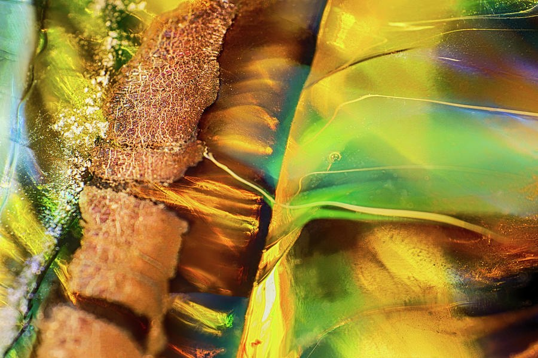
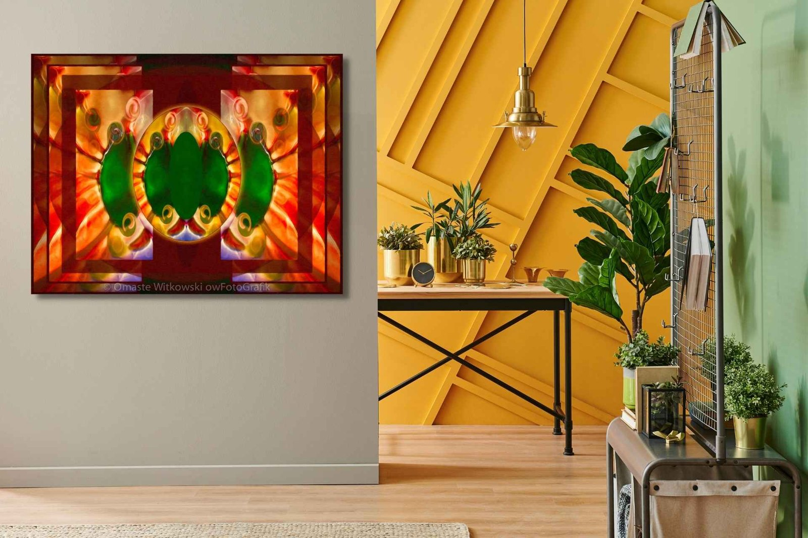
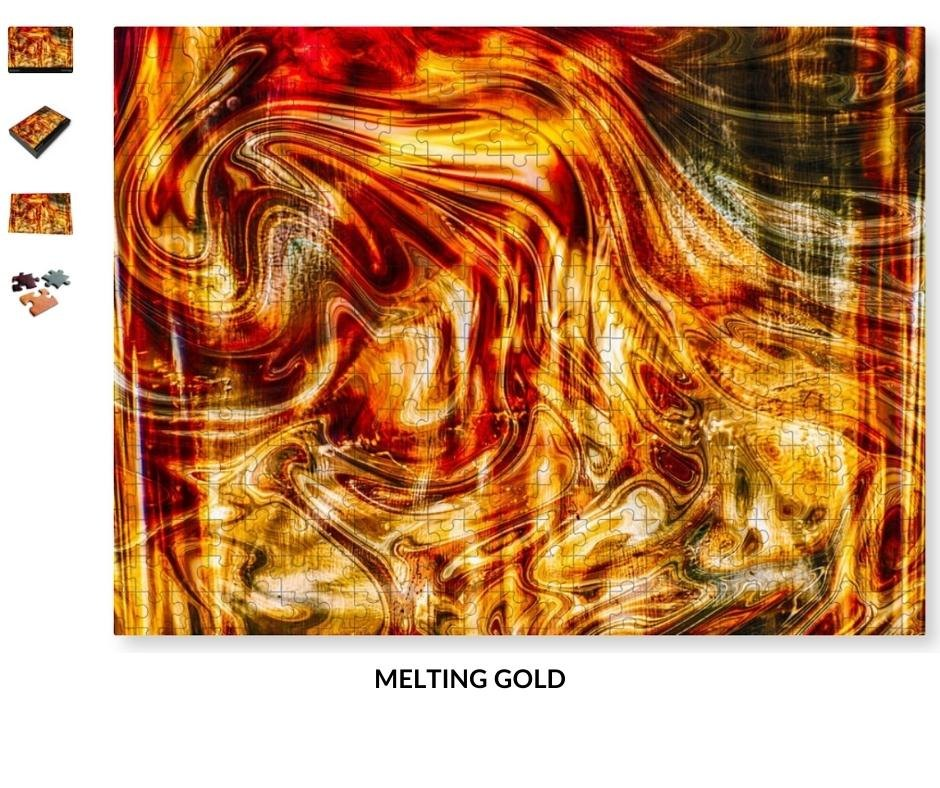
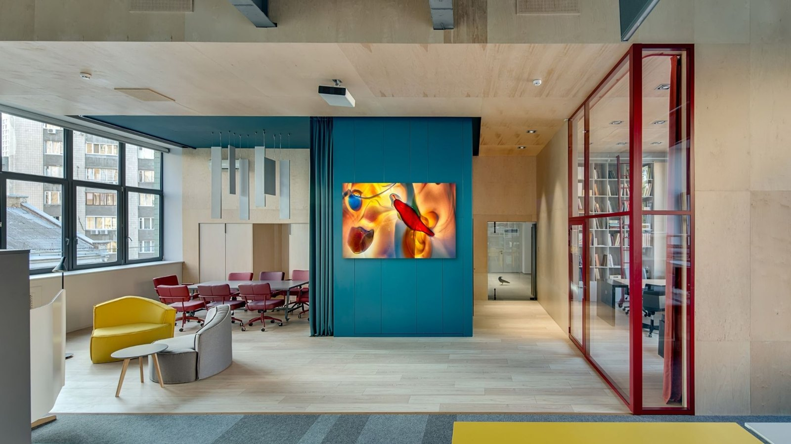
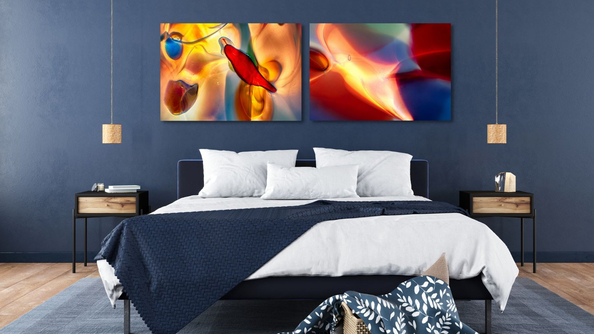
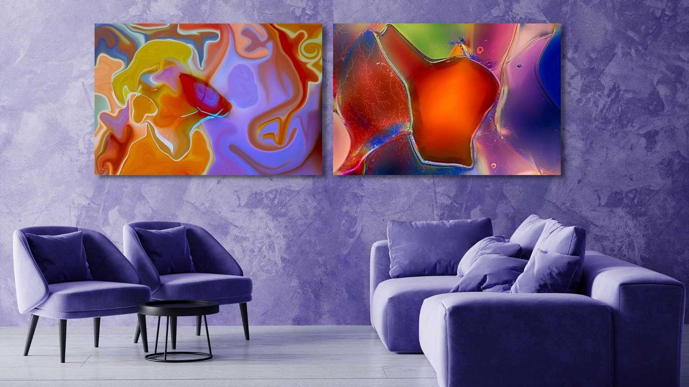
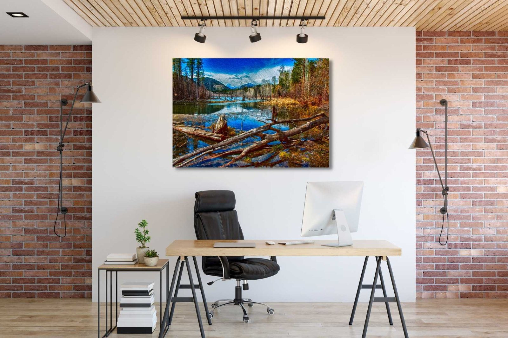

The Library
Stories behind the art
91 stories: what is in each piece and how it was made, the places the landscapes come from, and how to choose art and live with it. The 1 marked In my words are told from my own memories of making them.
How Colors Affect Mood In Interior DesignsA Magenta Diamond Glows at the Exact Center of This Golden OvalOne Glowing Center. Everything Else Mirrors It.The Water in This Forest River Glows Against the Dark EvergreensHiking Trails In The Methow ValleyThe Crimson Center That Reads as Wings, Then a MaskA Fire Lit From Within, Held by Cool Blue OvalsSit Low Among the Stones and Follow the Green River UpstreamWall Art Essentials For Pantone Color of The Year 2022Why Does This Blue Oval Look Lit From Within?The Violet Glow at the Center of Jewel PoolOne Sharp Green Wedge Cutting Through Glowing Blue and OrangeOrange Berries That Glow Like Embers in the DarkTwo Vivid Lizards Frame a Ghostly Pair in the MiddleAn Amber Eye That Seems to Glow From BehindCobalt Blue and Amber Gold, Glowing Like Light Through GlassThe Dark Seam That Turns Liquid Swirls Into an EmblemWhere a Red-Orange Glow Meets a Cool Blue Field of BubblesFiery Sun, Face, or Horns? Look Again at This MandalaWarm Clouds Pressing on Cold Blue Peaks, One Red Building BelowLine Art Drawings for Interior DesignsOne Red Thread Through a Sea of Glowing ColorRushing Water and Mirror-Calm, in One FrameA Lavender Meadow Under Snow-Dusted Blue RidgesWhy Do These Kayaks Glow Against a Rust-Red Shore?Faces in the Embers? Look Again at This Orange and Plum GlowTwo Tiny Walkers, One Shimmering Forest PathA Mountain Valley in Plum and Olive, Stretched WideA Cobalt Sky, Doubled in Still WaterWhy Does This Orange and Red Abstract Look Lit From Within?Hundreds of Tiny Spirals, One Orange Glow, and Ribbons of LightWhy Is This Amber Center Full of Tiny Suspended Bubbles?Two Halves of Glowing Blue Glass, Split by One Dark SeamGet Better Sleep NaturallyThe Glowing Orange Shape That Looks Like a Glass LanternA Green-to-Ruby Glass Diagonal That Ends in Glitter
Start here
Where the work began, and the stories to read first.My StoryAbout the artistMy StoryFrom photographing other people's rooms to photographing handblown glass from a thumb's width away. Hiking Trails In The Methow ValleyWhen we lived in Washington State, one of our favorite things to do was go hiking in the Methow Valley and especially the Twisp River trails! There are many wonderful locations here in Twisp, Winthrop, Carlton and Mazama. Each of them offers it’s own special trails and experiences. Some of these hik
Hiking Trails In The Methow ValleyWhen we lived in Washington State, one of our favorite things to do was go hiking in the Methow Valley and especially the Twisp River trails! There are many wonderful locations here in Twisp, Winthrop, Carlton and Mazama. Each of them offers it’s own special trails and experiences. Some of these hik Handblown Glass Art + Macro Glass PhotographyHandblown Glass Art Macro glass photography starts with handblown glass art and the glassblower that inspired all of this art is Garth Mudge, from Glassworks in Winthrop Wa. You can see for yourself just how amazing his creations are in these photos. You can also see the art that was created from th
Handblown Glass Art + Macro Glass PhotographyHandblown Glass Art Macro glass photography starts with handblown glass art and the glassblower that inspired all of this art is Garth Mudge, from Glassworks in Winthrop Wa. You can see for yourself just how amazing his creations are in these photos. You can also see the art that was created from th In my wordsThis Rose Looks Cast in Gold. It Isn't.A single rose that looks cast in glowing gold, made for the wide wall that has been waiting for something with real weight.
In my wordsThis Rose Looks Cast in Gold. It Isn't.A single rose that looks cast in glowing gold, made for the wide wall that has been waiting for something with real weight.
Hiking Trails In The Methow ValleyWhen we lived in Washington State, one of our favorite things to do was go hiking in the Methow Valley and especially the Twisp River trails! There are many wonderful locations here in Twisp, Winthrop, Carlton and Mazama. Each of them offers it’s own special trails and experiences. Some of these hikHandblown Glass Art + Macro Glass PhotographyHandblown Glass Art Macro glass photography starts with handblown glass art and the glassblower that inspired all of this art is Garth Mudge, from Glassworks in Winthrop Wa. You can see for yourself just how amazing his creations are in these photos. You can also see the art that was created from thIn my wordsThis Rose Looks Cast in Gold. It Isn't.A single rose that looks cast in glowing gold, made for the wide wall that has been waiting for something with real weight.Behind the art: Pacific Northwest Landscapes
22 stories · see the collection A Barefoot Boy, a Blue River, and Details That GlowA small barefoot boy stands at the edge of a vivid blue river, and everything around him glows with crisp, painterly detail.
A Barefoot Boy, a Blue River, and Details That GlowA small barefoot boy stands at the edge of a vivid blue river, and everything around him glows with crisp, painterly detail. A Bicycle Waits at the End of a Sunlit Bridge Into the PinesA sunlit plank bridge runs straight into the pines, and a lone bicycle leaning on the railing gives your eye somewhere to rest.
A Bicycle Waits at the End of a Sunlit Bridge Into the PinesA sunlit plank bridge runs straight into the pines, and a lone bicycle leaning on the railing gives your eye somewhere to rest. A Cobalt Sky, Doubled in Still WaterA saturated cobalt sky lands on a still lake and repeats itself almost exactly, with warm wiry grasses in front.
A Cobalt Sky, Doubled in Still WaterA saturated cobalt sky lands on a still lake and repeats itself almost exactly, with warm wiry grasses in front. A Deep Blue Sky, Sunbeams, and a Lake That Won't MoveThree-quarters sky, one still lake, and pale rays spreading from a low sun across an intense blue.
A Deep Blue Sky, Sunbeams, and a Lake That Won't MoveThree-quarters sky, one still lake, and pale rays spreading from a low sun across an intense blue. A Forest Where Every Twig Becomes Flowing LineA faint leaf-covered path, a grove of pale trunks and a bright blue sky, all turned into swirling, etched-looking line.
A Forest Where Every Twig Becomes Flowing LineA faint leaf-covered path, a grove of pale trunks and a bright blue sky, all turned into swirling, etched-looking line. A Lavender Meadow Under Snow-Dusted Blue RidgesA mauve meadow meets cool blue, snow-dusted peaks in a long, quiet panorama with a soft, brush-like surface.
A Lavender Meadow Under Snow-Dusted Blue RidgesA mauve meadow meets cool blue, snow-dusted peaks in a long, quiet panorama with a soft, brush-like surface. A Mountain Valley in Plum and Olive, Stretched WideA very wide, hushed view of layered violet mountains, dark evergreens and a winding valley, made for a wall that needs width.
A Mountain Valley in Plum and Olive, Stretched WideA very wide, hushed view of layered violet mountains, dark evergreens and a winding valley, made for a wall that needs width. Cobalt Blue Meets Rust and Gold in One Still Mountain PondA saturated blue sky drops into a still mountain pond, and big weathered logs lead your eye across it to the snowy peaks.
Cobalt Blue Meets Rust and Gold in One Still Mountain PondA saturated blue sky drops into a still mountain pond, and big weathered logs lead your eye across it to the snowy peaks. One Blue Lake, One Green Valley, and a Road That Pulls You InA saturated cobalt lake, olive and teal hills and a hand-painted-looking surface, ready to be printed in the size and finish you choose.
One Blue Lake, One Green Valley, and a Road That Pulls You InA saturated cobalt lake, olive and teal hills and a hand-painted-looking surface, ready to be printed in the size and finish you choose. One Blue River Cuts Through an Olive-Brown Mountain ValleyA wide, high-vantage mountain valley where one bright blue river is the only saturated note in an earthy, open view.
One Blue River Cuts Through an Olive-Brown Mountain ValleyA wide, high-vantage mountain valley where one bright blue river is the only saturated note in an earthy, open view. One Red Hat at the End of a Two-Plank BridgeTwo weathered planks, a rushing stream, and one small figure in red waiting at the far end.
One Red Hat at the End of a Two-Plank BridgeTwo weathered planks, a rushing stream, and one small figure in red waiting at the far end. One Tiny Red Boat in a Mirrored Lake of Lilac and GreenA hillside of dark pines and lilac shrubs doubles itself in quiet water, and one small red boat is the only bright note.
One Tiny Red Boat in a Mirrored Lake of Lilac and GreenA hillside of dark pines and lilac shrubs doubles itself in quiet water, and one small red boat is the only bright note. One White Summit, Half a Frame of Deep Blue SkyA white summit, dark evergreen ridges and a wide, empty blue sky, ready to print in the size and finish you choose.
One White Summit, Half a Frame of Deep Blue SkyA white summit, dark evergreen ridges and a wide, empty blue sky, ready to print in the size and finish you choose. Rushing Water and Mirror-Calm, in One FrameChurning teal water, a mirror-still reach upstream and an intensely blue sky meet in one navy-framed print with the word Momentum in script.
Rushing Water and Mirror-Calm, in One FrameChurning teal water, a mirror-still reach upstream and an intensely blue sky meet in one navy-framed print with the word Momentum in script. Sit Low Among the Stones and Follow the Green River UpstreamGet down to stone level and let a glowing green river lead your eye into a cool, shaded evergreen valley.
Sit Low Among the Stones and Follow the Green River UpstreamGet down to stone level and let a glowing green river lead your eye into a cool, shaded evergreen valley. Step Through an Arch of Leaves Into a Sunlit GardenA sheltered look out from under a canopy of leaves, across a glowing green lawn, in a print made to order in your choice of size and finish.
Step Through an Arch of Leaves Into a Sunlit GardenA sheltered look out from under a canopy of leaves, across a glowing green lawn, in a print made to order in your choice of size and finish. The One Sprinkler Jet Glowing Under a Violet SunsetA warm orange-and-violet sky, cool blue mountains and a single sprinkler jet catching the last light in a quiet pasture.
The One Sprinkler Jet Glowing Under a Violet SunsetA warm orange-and-violet sky, cool blue mountains and a single sprinkler jet catching the last light in a quiet pasture. The Water in This Forest River Glows Against the Dark EvergreensA clear green-turquoise river glows between pale stones and a dark evergreen forest, and you can choose it as a print on Fine Art America.
The Water in This Forest River Glows Against the Dark EvergreensA clear green-turquoise river glows between pale stones and a dark evergreen forest, and you can choose it as a print on Fine Art America. Two Tiny Walkers, One Shimmering Forest PathA dirt trail curves through tall conifer trunks toward two small walkers in red and pink, and the branches around them shimmer with etched, swirling line.
Two Tiny Walkers, One Shimmering Forest PathA dirt trail curves through tall conifer trunks toward two small walkers in red and pink, and the branches around them shimmer with etched, swirling line. Warm Clouds Pressing on Cold Blue Peaks, One Red Building BelowWarm, glowing clouds settle over cool blue snowy peaks, and a small red-brown building shows how big the valley is.
Warm Clouds Pressing on Cold Blue Peaks, One Red Building BelowWarm, glowing clouds settle over cool blue snowy peaks, and a small red-brown building shows how big the valley is. Where Trees, Sky and Water All Curl Into Brush-Like SwirlsA river bends away past pale stones and leaning trees, and every tree, cloud and ripple curls into brush-like swirls.
Where Trees, Sky and Water All Curl Into Brush-Like SwirlsA river bends away past pale stones and leaning trees, and every tree, cloud and ripple curls into brush-like swirls. Why Do These Kayaks Glow Against a Rust-Red Shore?Yellow, teal, hot pink, red, blue and white kayaks wait on a rust-red shore beneath a deep blue sky.
Why Do These Kayaks Glow Against a Rust-Red Shore?Yellow, teal, hot pink, red, blue and white kayaks wait on a rust-red shore beneath a deep blue sky.Behind the art: Abstract Glass Macro
22 stories · see the collection A Crimson Bud That Glows: Is It a Sprout or a Drip?One slender stalk, one glossy crimson bulb, and a glow of cream light around them: a small shape you will keep looking at.
A Crimson Bud That Glows: Is It a Sprout or a Drip?One slender stalk, one glossy crimson bulb, and a glow of cream light around them: a small shape you will keep looking at. A Green-to-Ruby Glass Diagonal That Ends in GlitterOne diagonal of glossy, glowing color runs from emerald green through ruby red to amber, then lands on a patch that sparkles like sand.
A Green-to-Ruby Glass Diagonal That Ends in GlitterOne diagonal of glossy, glowing color runs from emerald green through ruby red to amber, then lands on a patch that sparkles like sand. A Heart That Is Only Light and Color, Never DrawnA heart you feel before you name it, built from overlapping red and violet planes and lit as if from within.A Heart You Never See Drawn, Only Lit From WithinA red and violet heart that is only suggested, never drawn, glowing in soft amber, pink and cream.
A Heart That Is Only Light and Color, Never DrawnA heart you feel before you name it, built from overlapping red and violet planes and lit as if from within.A Heart You Never See Drawn, Only Lit From WithinA red and violet heart that is only suggested, never drawn, glowing in soft amber, pink and cream. An Amber Eye That Seems to Glow From BehindA smooth amber void glows like a lens, framed by glassy folds and one frayed crystalline shard.
An Amber Eye That Seems to Glow From BehindA smooth amber void glows like a lens, framed by glassy folds and one frayed crystalline shard. Cobalt Blue and Amber Gold, Glowing Like Light Through GlassDeep cobalt and glowing amber seem lit from behind in this glossy, glass-like abstract, and a few tiny bubbles give the translucence away.
Cobalt Blue and Amber Gold, Glowing Like Light Through GlassDeep cobalt and glowing amber seem lit from behind in this glossy, glass-like abstract, and a few tiny bubbles give the translucence away. One Green Lens Pulls Every Color Toward ItA round, eye-like opening anchors a field of glossy green, golden yellow and teal, and a single golden arc sweeps across it.
One Green Lens Pulls Every Color Toward ItA round, eye-like opening anchors a field of glossy green, golden yellow and teal, and a single golden arc sweeps across it. One Red Thread Through a Sea of Glowing ColorA thin red line, a small heart-like shape and a wet-looking droplet hang in a stained-glass sea of color.
One Red Thread Through a Sea of Glowing ColorA thin red line, a small heart-like shape and a wet-looking droplet hang in a stained-glass sea of color. One Sharp Green Wedge Cutting Through Glowing Blue and OrangeA pointed emerald wedge slices through glowing blue and orange planes in this vivid, jewel-toned abstract.
One Sharp Green Wedge Cutting Through Glowing Blue and OrangeA pointed emerald wedge slices through glowing blue and orange planes in this vivid, jewel-toned abstract.
Rough as bark on one side, lit like glass on the otherRough, crusty orange-brown and liquid-looking green-gold meet in one frame, joined by fine curving lines of light. The Amber Oval That Glows Like Light Through GlassOne glowing amber oval, edged in bright light and set in burgundy and blue, is the whole reason to look twice.
The Amber Oval That Glows Like Light Through GlassOne glowing amber oval, edged in bright light and set in burgundy and blue, is the whole reason to look twice. The Amber Teardrop That Seems Lit From BehindMagenta, deep violet and burnt amber glow in long curves, with a chain of crisp bubbles, as if light were passing through layers of glass.
The Amber Teardrop That Seems Lit From BehindMagenta, deep violet and burnt amber glow in long curves, with a chain of crisp bubbles, as if light were passing through layers of glass. The Dark Ring at the Center of This Glass Orb Looks BackA dark, jewel-toned glass orb with a ring at its center that reads as an eye, a lens or a distant planet.
The Dark Ring at the Center of This Glass Orb Looks BackA dark, jewel-toned glass orb with a ring at its center that reads as an eye, a lens or a distant planet. The Glowing Amber Eye Hidden in Cobalt GlassA pale, bead-ringed oval glows at the heart of an amber teardrop, set in cobalt blue and chartreuse glass.
The Glowing Amber Eye Hidden in Cobalt GlassA pale, bead-ringed oval glows at the heart of an amber teardrop, set in cobalt blue and chartreuse glass. The Glowing Eye Hiding Inside a Current of Electric BlueA glowing oval with a crumpled reddish-brown and gold core sits in rippling electric blue, and it keeps pulling you back for another look.
The Glowing Eye Hiding Inside a Current of Electric BlueA glowing oval with a crumpled reddish-brown and gold core sits in rippling electric blue, and it keeps pulling you back for another look. The Glowing Orange Shape That Looks Like a Glass LanternA rounded orange and green shape glows from behind like a lantern, set against deep crimson and soft cream.
The Glowing Orange Shape That Looks Like a Glass LanternA rounded orange and green shape glows from behind like a lantern, set against deep crimson and soft cream. The Red Drip That Glows Against a Pale, Quiet GroundA tall glossy red form with a dripping tip glows beside a soft purple circle, and you can bring it home as a print.
The Red Drip That Glows Against a Pale, Quiet GroundA tall glossy red form with a dripping tip glows beside a soft purple circle, and you can bring it home as a print. The Red Glass That Looks Lit From BehindOne jewel-red glass form glows at the center of a soft, blurred field of amber, teal and cream.
The Red Glass That Looks Lit From BehindOne jewel-red glass form glows at the center of a soft, blurred field of amber, teal and cream. The Violet Glow at the Center of Jewel PoolOverlapping shapes in teal, ruby, violet, cobalt and amber glow from within, with a violet and pink form edged in gold at the center.
The Violet Glow at the Center of Jewel PoolOverlapping shapes in teal, ruby, violet, cobalt and amber glow from within, with a violet and pink form edged in gold at the center. Two Halves of Glowing Blue Glass, Split by One Dark SeamTwo mirror-image panels of glowing cobalt glass tiles meet at a narrow dark seam, and the grid bows outward like a pair of softly bulging doors.
Two Halves of Glowing Blue Glass, Split by One Dark SeamTwo mirror-image panels of glowing cobalt glass tiles meet at a narrow dark seam, and the grid bows outward like a pair of softly bulging doors. Where a Red-Orange Glow Meets a Cool Blue Field of BubblesA red-orange band, rough amber and a hazy blue field of fine curves and tiny bubbles, all lit as if from within.
Where a Red-Orange Glow Meets a Cool Blue Field of BubblesA red-orange band, rough amber and a hazy blue field of fine curves and tiny bubbles, all lit as if from within. Why Is This Amber Center Full of Tiny Suspended Bubbles?A warm amber column studded with tiny bubbles rises between fields of cobalt blue, and it looks lit from behind.
Why Is This Amber Center Full of Tiny Suspended Bubbles?A warm amber column studded with tiny bubbles rises between fields of cobalt blue, and it looks lit from behind.Behind the art: Contemporary Abstract & Mixed Media
16 stories · see the collection A Dark Mask-Like Core Inside a Blaze of Mirrored OrangeA formal, mirrored blaze of orange and gold with a dark medallion at its heart, available as a print on Fine Art America.
A Dark Mask-Like Core Inside a Blaze of Mirrored OrangeA formal, mirrored blaze of orange and gold with a dark medallion at its heart, available as a print on Fine Art America. A Heart That Seems to Glow From Within, Made of Mirrored SwirlsA large heart of mirrored swirls, glowing orange at its center, now available as a print on Fine Art America.
A Heart That Seems to Glow From Within, Made of Mirrored SwirlsA large heart of mirrored swirls, glowing orange at its center, now available as a print on Fine Art America. A Magenta Diamond Glows at the Exact Center of This Golden OvalA golden oval, mirrored teal swirls and one hot magenta diamond at dead center, ready to be printed for your wall.
A Magenta Diamond Glows at the Exact Center of This Golden OvalA golden oval, mirrored teal swirls and one hot magenta diamond at dead center, ready to be printed for your wall. Faces in the Embers? Look Again at This Orange and Plum GlowA backlit-looking swirl of burnt orange, gold and deep plum, with shapes that might be faces if you let them.
Faces in the Embers? Look Again at This Orange and Plum GlowA backlit-looking swirl of burnt orange, gold and deep plum, with shapes that might be faces if you let them. Hundreds of Tiny Spirals, One Orange Glow, and Ribbons of LightA dense field of glowing crimson and teal spirals, crossed by ribbons of light and warmed by a single orange spark.
Hundreds of Tiny Spirals, One Orange Glow, and Ribbons of LightA dense field of glowing crimson and teal spirals, crossed by ribbons of light and warmed by a single orange spark. Light Through Molten Glass: One Flare in a Field of SpiralsGlowing orange and amber ribbons swirl across the frame and pull your eye to one bright cream burst.
Light Through Molten Glass: One Flare in a Field of SpiralsGlowing orange and amber ribbons swirl across the frame and pull your eye to one bright cream burst. Liquid Glass Swirls That Seem Lit From WithinGlossy ribbons of red, gold, magenta and cobalt curl across a canvas-like grain, and the whole surface looks lit from within.
Liquid Glass Swirls That Seem Lit From WithinGlossy ribbons of red, gold, magenta and cobalt curl across a canvas-like grain, and the whole surface looks lit from within. Look Longer: Faces and Wings in a Mirrored Violet GlowA pale pink-lilac diamond glows at the heart of a mirrored indigo field, and the longer you look, the more the shapes around it seem to see you back.
Look Longer: Faces and Wings in a Mirrored Violet GlowA pale pink-lilac diamond glows at the heart of a mirrored indigo field, and the longer you look, the more the shapes around it seem to see you back. One Glowing Center. Everything Else Mirrors It.A mirrored abstract where marbled swirls spiral out from a glowing yellow and orange heart, framed by dark olive and chocolate brown.
One Glowing Center. Everything Else Mirrors It.A mirrored abstract where marbled swirls spiral out from a glowing yellow and orange heart, framed by dark olive and chocolate brown. Petals, masks or faces? This mirror won't let you decideA mirrored kaleidoscope in hot magenta and crimson, lit as if from within and set in a dark oval, now available as a print on Fine Art America.
Petals, masks or faces? This mirror won't let you decideA mirrored kaleidoscope in hot magenta and crimson, lit as if from within and set in a dark oval, now available as a print on Fine Art America. The Blue Sweep That Cuts Through a Glowing Amber SwirlWarm amber and cool cobalt meet in a glossy, radiating swirl that keeps the eye moving around one bright blue sweep.
The Blue Sweep That Cuts Through a Glowing Amber SwirlWarm amber and cool cobalt meet in a glossy, radiating swirl that keeps the eye moving around one bright blue sweep. The small ringed eye hiding in a glow of green and coralOlive green folds, a backlit-looking ribbon of coral, and one small ringed detail that keeps drawing your eye back.
The small ringed eye hiding in a glow of green and coralOlive green folds, a backlit-looking ribbon of coral, and one small ringed detail that keeps drawing your eye back. Where Two Crimson Wings Hold a Glowing Golden HeartA glowing golden core between two dark red wings, mirrored in all four directions, ready to be printed for your wall.
Where Two Crimson Wings Hold a Glowing Golden HeartA glowing golden core between two dark red wings, mirrored in all four directions, ready to be printed for your wall. Why Does This Blue Oval Look Lit From Within?A deep blue oval glows at the center of a perfectly mirrored design of crimson scrolls and golden swirls.
Why Does This Blue Oval Look Lit From Within?A deep blue oval glows at the center of a perfectly mirrored design of crimson scrolls and golden swirls. Why Does This Orange and Red Abstract Look Lit From Within?Ribbons of orange, gold and crimson fold across the whole frame and seem to glow from within.
Why Does This Orange and Red Abstract Look Lit From Within?Ribbons of orange, gold and crimson fold across the whole frame and seem to glow from within.Behind the art: Botanical & Flowers
3 stories · see the collectionIn my wordsThis Rose Looks Cast in Gold. It Isn't.A single rose that looks cast in glowing gold, made for the wide wall that has been waiting for something with real weight. A Flower Built From Hundreds of Tiny Spirals, Glowing Like a SunOne round, ruffled orange flower glows against near-black, and every petal is made of tiny spirals.
A Flower Built From Hundreds of Tiny Spirals, Glowing Like a SunOne round, ruffled orange flower glows against near-black, and every petal is made of tiny spirals. Orange Berries That Glow Like Embers in the DarkA single cluster of glossy orange berries glows out of the shadows in a quiet, painterly botanical photograph.
Orange Berries That Glow Like Embers in the DarkA single cluster of glossy orange berries glows out of the shadows in a quiet, painterly botanical photograph.Behind the art: Butterflies, Birds & Wildlife
5 stories · see the collection A Butterfly Cut Open With White, Its Wings Full of Liquid ColorA front-facing butterfly in glowing yellow, orange, red and green, with white cutout cells that make it look designed rather than ordinary.
A Butterfly Cut Open With White, Its Wings Full of Liquid ColorA front-facing butterfly in glowing yellow, orange, red and green, with white cutout cells that make it look designed rather than ordinary. The Blue Butterfly That Looks Like Stained GlassOne butterfly, wings spread flat, in a cobalt blue so saturated it reads from across the room.
The Blue Butterfly That Looks Like Stained GlassOne butterfly, wings spread flat, in a cobalt blue so saturated it reads from across the room. The Peacock Fan That Glows Against Dark FoliageA fully opened peacock fan glows in emerald and peacock blue while two more birds complete the scene.
The Peacock Fan That Glows Against Dark FoliageA fully opened peacock fan glows in emerald and peacock blue while two more birds complete the scene. Two Vivid Lizards Frame a Ghostly Pair in the MiddleThree panels, two bold mirrored lizards and one ghostly crossing pair, all glowing on clean white.
Two Vivid Lizards Frame a Ghostly Pair in the MiddleThree panels, two bold mirrored lizards and one ghostly crossing pair, all glowing on clean white.Behind the art: Spiritual, Mandala & Symbolic
7 stories · see the collection A Fire Lit From Within, Held by Cool Blue OvalsA small fiery core, mirrored in every direction and wrapped in cool blue-violet ovals, makes Ember Emblem a bold piece you can read from across the room.
A Fire Lit From Within, Held by Cool Blue OvalsA small fiery core, mirrored in every direction and wrapped in cool blue-violet ovals, makes Ember Emblem a bold piece you can read from across the room. A Tribal Scorpion That Glows Like Embers From WithinA crisp tattoo-style scorpion whose crimson body swirls like smoke and glows like embers against flat white.
A Tribal Scorpion That Glows Like Embers From WithinA crisp tattoo-style scorpion whose crimson body swirls like smoke and glows like embers against flat white. Can You See the Eye in Twelve Glowing Rays?Twelve whipping, ember-bright rays spin around a black-ringed oval, and the colour looks lit from within.
Can You See the Eye in Twelve Glowing Rays?Twelve whipping, ember-bright rays spin around a black-ringed oval, and the colour looks lit from within. Fiery Sun, Face, or Horns? Look Again at This MandalaA glowing circle of orange and red flames holds a cool teal center, mirrored exactly in four directions on a deep navy square.
Fiery Sun, Face, or Horns? Look Again at This MandalaA glowing circle of orange and red flames holds a cool teal center, mirrored exactly in four directions on a deep navy square. One Gold Star, Held Still Inside a Swirling Blue DiamondA large golden star glows in a dark chocolate-brown square on a marbled cobalt diamond, and it is yours as a print made to order.
One Gold Star, Held Still Inside a Swirling Blue DiamondA large golden star glows in a dark chocolate-brown square on a marbled cobalt diamond, and it is yours as a print made to order. The Crimson Center That Reads as Wings, Then a MaskA dark crimson shape glows at the heart of a mirrored world of cobalt, violet, peach and cream.
The Crimson Center That Reads as Wings, Then a MaskA dark crimson shape glows at the heart of a mirrored world of cobalt, violet, peach and cream. The Glowing Diamond That Keeps Your Eye CirclingA glowing orange-and-amber diamond, mirrored in every direction and set against cobalt blue, in a horizontal print you can choose to suit your wall.
The Glowing Diamond That Keeps Your Eye CirclingA glowing orange-and-amber diamond, mirrored in every direction and set against cobalt blue, in a horizontal print you can choose to suit your wall.How the work is made
The glass, the lens, the layers: how the pictures come to be.
Digital Mixed Media Abstract ArtSo what exactly is Digital Mixed Media? Many people understand that traditional mixed media is art that was created from more than one physical media type. For example, if you draw with ink and then paint over the drawing with watercolor paints and then add some highlights with colored pencil, thenHandblown Glass Art + Macro Glass PhotographyHandblown Glass Art Macro glass photography starts with handblown glass art and the glassblower that inspired all of this art is Garth Mudge, from Glassworks in Winthrop Wa. You can see for yourself just how amazing his creations are in these photos. You can also see the art that was created from th How To Create Unique Interior Designs With Glass ArtGlass Art Might Just Be The Bold Statement Your Interior Designs Need Glass artwork is highly customized photography and as a result of the way it is created, this art form is endlessly customizable and can be incorporated into literally any type of interior design. The examples shown on this page
How To Create Unique Interior Designs With Glass ArtGlass Art Might Just Be The Bold Statement Your Interior Designs Need Glass artwork is highly customized photography and as a result of the way it is created, this art form is endlessly customizable and can be incorporated into literally any type of interior design. The examples shown on this page  Line Art Drawings for Interior DesignsLine Art Might Just Be The Minimalist Statement Your Interior Designs Need Art doesn’t have to be colorful or elaborate to make a statement. In fact, the simplest designs often have the most impact. Line art is a classic type of drawing style that is influenced by the line drawings of Matisse and Pi
Line Art Drawings for Interior DesignsLine Art Might Just Be The Minimalist Statement Your Interior Designs Need Art doesn’t have to be colorful or elaborate to make a statement. In fact, the simplest designs often have the most impact. Line art is a classic type of drawing style that is influenced by the line drawings of Matisse and PiPlaces
The valley, the mountains and the towns the landscapes come from.Living with art
Colour, rooms and the everyday questions of choosing art and living with it. Autumn LeavesAutumn Leaves: A Symphony of Fall Colors Can the rustle of ‘Autumn Leaves’ stir your soul? As an artist, I’ve always been captivated by the changing seasons, and autumn, with its vibrant palette, holds a special place in my heart. This season of change is a symphony of colors that sings of life’s fl
Autumn LeavesAutumn Leaves: A Symphony of Fall Colors Can the rustle of ‘Autumn Leaves’ stir your soul? As an artist, I’ve always been captivated by the changing seasons, and autumn, with its vibrant palette, holds a special place in my heart. This season of change is a symphony of colors that sings of life’s fl Get Better Sleep NaturallyMany people toss and turn restlessly for hours wishing that there was a way to get better sleep naturally. Many people, including myself at times, struggle to fall asleep, stay asleep, and sleep deeply. One of the worst things to happen to me is that I toss and turn for hours and then fall fast … Ge
Get Better Sleep NaturallyMany people toss and turn restlessly for hours wishing that there was a way to get better sleep naturally. Many people, including myself at times, struggle to fall asleep, stay asleep, and sleep deeply. One of the worst things to happen to me is that I toss and turn for hours and then fall fast … Ge
Holiday Gift Guide Home and Family EditionHappy Thanksgiving Week! It’s a great time of year to be thankful, merry, and stay warm! LOL… This week also kicks off the holiday gift and shopping season. This one is a lot of fun for me because it means that I get to share my Holiday Gift Guide with you! There are many ways … Holiday Gift Guide H
How Colors Affect Mood In Interior DesignsHaving the right colors in your interior designs are key to productivity, mood, and even innovation! Some colors, like red, will trigger emotions like passion, love, anger and danger. Where blue brings feelings of calmness, serenity and peace. This is why it is important to put thought into the use
How Colors Can Affect Health and WellnessDid you know that colors can have a profound affect on physical, emotional, spiritual and mental health? Colors are not just colors, they represent the aspect of things that is caused by differing qualities of light being reflected or emitted by them. In other words, you have to have light to see co
Wall Art Essentials For Pantone Color of The Year 2022By now many people know that the Pantone color of the year for 2022 is Very Peri (Pantone 17-3938). It has been described as a “dynamic periwinkle blue hue with a vivifying violet red undertone”. This special color brings with it happiness and warmth and is the first brand new shade to be named colo Why Art Is Good For Mental HealthCreating art is good for mental health at least partly because it takes your mind off your everyday life and provides a relaxing distraction. In fact, artistic activities such as sculpting, painting, or drawing are known to lower stress levels and promote mental calmness. What many people don’t know
Why Art Is Good For Mental HealthCreating art is good for mental health at least partly because it takes your mind off your everyday life and provides a relaxing distraction. In fact, artistic activities such as sculpting, painting, or drawing are known to lower stress levels and promote mental calmness. What many people don’t knowFor designers and decorators
Choosing art for other people's rooms, and for whole projects. Art for Interior Designers and DecoratorsDesigner Discount Club Apply now to receive 15 – 25% off museum-quality art, photography, mixed media and illustration prints. Membership is open to interior designers, corporate art buyers, and industry professionals who specify and purchase artwork for large-scale projects. AND homeowners or decor
Art for Interior Designers and DecoratorsDesigner Discount Club Apply now to receive 15 – 25% off museum-quality art, photography, mixed media and illustration prints. Membership is open to interior designers, corporate art buyers, and industry professionals who specify and purchase artwork for large-scale projects. AND homeowners or decor Why Have Art in the Workplace?Art in the Workplace does more than just make it look nicer. In fact, the impact of office art is often underestimated both in home offices and larger workplaces. Splashes of color in a painting can alter the mood of a meeting room or a piece of unusual artwork can provide a talking point … Why Have
Why Have Art in the Workplace?Art in the Workplace does more than just make it look nicer. In fact, the impact of office art is often underestimated both in home offices and larger workplaces. Splashes of color in a painting can alter the mood of a meeting room or a piece of unusual artwork can provide a talking point … Why Have
Why is it so HARD for Interior Designers to find the BEST art for their projects?Many people would not guess that it’s hard for interior designers to find the best art for their projects. You would think that they always knew where to find it, but in fact they consistently struggle with this exact problem! Many of them focus on more than just new builds, remodels or entire spaceEvery story
This Rose Looks Cast in Gold. It Isn't.Behind the art: Botanical & Flowers · In my wordsA single rose that looks cast in glowing gold, made for the wide wall that has been waiting for something with real weight.The Blue Butterfly That Looks Like Stained GlassBehind the art: Butterflies, Birds & WildlifeOne butterfly, wings spread flat, in a cobalt blue so saturated it reads from across the room.A Flower Built From Hundreds of Tiny Spirals, Glowing Like a SunBehind the art: Botanical & FlowersOne round, ruffled orange flower glows against near-black, and every petal is made of tiny spirals.Faces in the Embers? Look Again at This Orange and Plum GlowBehind the art: Contemporary Abstract & Mixed MediaA backlit-looking swirl of burnt orange, gold and deep plum, with shapes that might be faces if you let them.A Crimson Bud That Glows: Is It a Sprout or a Drip?Behind the art: Abstract Glass MacroOne slender stalk, one glossy crimson bulb, and a glow of cream light around them: a small shape you will keep looking at.The Crimson Center That Reads as Wings, Then a MaskBehind the art: Spiritual, Mandala & SymbolicA dark crimson shape glows at the heart of a mirrored world of cobalt, violet, peach and cream.Liquid Glass Swirls That Seem Lit From WithinBehind the art: Contemporary Abstract & Mixed MediaGlossy ribbons of red, gold, magenta and cobalt curl across a canvas-like grain, and the whole surface looks lit from within.A Tribal Scorpion That Glows Like Embers From WithinBehind the art: Spiritual, Mandala & SymbolicA crisp tattoo-style scorpion whose crimson body swirls like smoke and glows like embers against flat white.A Magenta Diamond Glows at the Exact Center of This Golden OvalBehind the art: Contemporary Abstract & Mixed MediaA golden oval, mirrored teal swirls and one hot magenta diamond at dead center, ready to be printed for your wall.An Amber Eye That Seems to Glow From BehindBehind the art: Abstract Glass MacroA smooth amber void glows like a lens, framed by glassy folds and one frayed crystalline shard.Can You See the Eye in Twelve Glowing Rays?Behind the art: Spiritual, Mandala & SymbolicTwelve whipping, ember-bright rays spin around a black-ringed oval, and the colour looks lit from within.Look Longer: Faces and Wings in a Mirrored Violet GlowBehind the art: Contemporary Abstract & Mixed MediaA pale pink-lilac diamond glows at the heart of a mirrored indigo field, and the longer you look, the more the shapes around it seem to see you back.Cobalt Blue Meets Rust and Gold in One Still Mountain PondBehind the art: Pacific Northwest LandscapesA saturated blue sky drops into a still mountain pond, and big weathered logs lead your eye across it to the snowy peaks.Fiery Sun, Face, or Horns? Look Again at This MandalaBehind the art: Spiritual, Mandala & SymbolicA glowing circle of orange and red flames holds a cool teal center, mirrored exactly in four directions on a deep navy square.One Gold Star, Held Still Inside a Swirling Blue DiamondBehind the art: Spiritual, Mandala & SymbolicA large golden star glows in a dark chocolate-brown square on a marbled cobalt diamond, and it is yours as a print made to order. A Giant Metal Insect Stands Quietly on a Garden PathBehind the art: Travel / Specialty / ProjectsA pale blue-grey metallic insect stands on a sunny garden path, and every leaf around it swirls like wet paint.The Peacock Fan That Glows Against Dark FoliageBehind the art: Butterflies, Birds & WildlifeA fully opened peacock fan glows in emerald and peacock blue while two more birds complete the scene.One Tiny Red Boat in a Mirrored Lake of Lilac and GreenBehind the art: Pacific Northwest LandscapesA hillside of dark pines and lilac shrubs doubles itself in quiet water, and one small red boat is the only bright note.A Heart That Seems to Glow From Within, Made of Mirrored SwirlsBehind the art: Contemporary Abstract & Mixed MediaA large heart of mirrored swirls, glowing orange at its center, now available as a print on Fine Art America.One Glowing Center. Everything Else Mirrors It.Behind the art: Contemporary Abstract & Mixed MediaA mirrored abstract where marbled swirls spiral out from a glowing yellow and orange heart, framed by dark olive and chocolate brown.Light Through Molten Glass: One Flare in a Field of SpiralsBehind the art: Contemporary Abstract & Mixed MediaGlowing orange and amber ribbons swirl across the frame and pull your eye to one bright cream burst.Why Does This Orange and Red Abstract Look Lit From Within?Behind the art: Contemporary Abstract & Mixed MediaRibbons of orange, gold and crimson fold across the whole frame and seem to glow from within.Where Two Crimson Wings Hold a Glowing Golden HeartBehind the art: Contemporary Abstract & Mixed MediaA glowing golden core between two dark red wings, mirrored in all four directions, ready to be printed for your wall.Why Does This Blue Oval Look Lit From Within?Behind the art: Contemporary Abstract & Mixed MediaA deep blue oval glows at the center of a perfectly mirrored design of crimson scrolls and golden swirls.Step Through an Arch of Leaves Into a Sunlit GardenBehind the art: Pacific Northwest LandscapesA sheltered look out from under a canopy of leaves, across a glowing green lawn, in a print made to order in your choice of size and finish.The small ringed eye hiding in a glow of green and coralBehind the art: Contemporary Abstract & Mixed MediaOlive green folds, a backlit-looking ribbon of coral, and one small ringed detail that keeps drawing your eye back.Orange Berries That Glow Like Embers in the DarkBehind the art: Botanical & FlowersA single cluster of glossy orange berries glows out of the shadows in a quiet, painterly botanical photograph.The Glowing Diamond That Keeps Your Eye CirclingBehind the art: Spiritual, Mandala & SymbolicA glowing orange-and-amber diamond, mirrored in every direction and set against cobalt blue, in a horizontal print you can choose to suit your wall.A Forest Where Every Twig Becomes Flowing LineBehind the art: Pacific Northwest LandscapesA faint leaf-covered path, a grove of pale trunks and a bright blue sky, all turned into swirling, etched-looking line.A Fire Lit From Within, Held by Cool Blue OvalsBehind the art: Spiritual, Mandala & SymbolicA small fiery core, mirrored in every direction and wrapped in cool blue-violet ovals, makes Ember Emblem a bold piece you can read from across the room.A Butterfly Cut Open With White, Its Wings Full of Liquid ColorBehind the art: Butterflies, Birds & WildlifeA front-facing butterfly in glowing yellow, orange, red and green, with white cutout cells that make it look designed rather than ordinary.Two Vivid Lizards Frame a Ghostly Pair in the MiddleBehind the art: Butterflies, Birds & WildlifeThree panels, two bold mirrored lizards and one ghostly crossing pair, all glowing on clean white.Hundreds of Tiny Spirals, One Orange Glow, and Ribbons of LightBehind the art: Contemporary Abstract & Mixed MediaA dense field of glowing crimson and teal spirals, crossed by ribbons of light and warmed by a single orange spark.Petals, masks or faces? This mirror won't let you decideBehind the art: Contemporary Abstract & Mixed MediaA mirrored kaleidoscope in hot magenta and crimson, lit as if from within and set in a dark oval, now available as a print on Fine Art America.Why Is This Amber Center Full of Tiny Suspended Bubbles?Behind the art: Abstract Glass MacroA warm amber column studded with tiny bubbles rises between fields of cobalt blue, and it looks lit from behind.A Dark Mask-Like Core Inside a Blaze of Mirrored OrangeBehind the art: Contemporary Abstract & Mixed MediaA formal, mirrored blaze of orange and gold with a dark medallion at its heart, available as a print on Fine Art America.The One Sprinkler Jet Glowing Under a Violet SunsetBehind the art: Pacific Northwest LandscapesA warm orange-and-violet sky, cool blue mountains and a single sprinkler jet catching the last light in a quiet pasture.A Cobalt Sky, Doubled in Still WaterBehind the art: Pacific Northwest LandscapesA saturated cobalt sky lands on a still lake and repeats itself almost exactly, with warm wiry grasses in front.A Barefoot Boy, a Blue River, and Details That GlowBehind the art: Pacific Northwest LandscapesA small barefoot boy stands at the edge of a vivid blue river, and everything around him glows with crisp, painterly detail.One Red Hat at the End of a Two-Plank BridgeBehind the art: Pacific Northwest LandscapesTwo weathered planks, a rushing stream, and one small figure in red waiting at the far end.Why Do These Kayaks Glow Against a Rust-Red Shore?Behind the art: Pacific Northwest LandscapesYellow, teal, hot pink, red, blue and white kayaks wait on a rust-red shore beneath a deep blue sky.A Lavender Meadow Under Snow-Dusted Blue RidgesBehind the art: Pacific Northwest LandscapesA mauve meadow meets cool blue, snow-dusted peaks in a long, quiet panorama with a soft, brush-like surface.Where Trees, Sky and Water All Curl Into Brush-Like SwirlsBehind the art: Pacific Northwest LandscapesA river bends away past pale stones and leaning trees, and every tree, cloud and ripple curls into brush-like swirls.A Bicycle Waits at the End of a Sunlit Bridge Into the PinesBehind the art: Pacific Northwest LandscapesA sunlit plank bridge runs straight into the pines, and a lone bicycle leaning on the railing gives your eye somewhere to rest.A Mountain Valley in Plum and Olive, Stretched WideBehind the art: Pacific Northwest LandscapesA very wide, hushed view of layered violet mountains, dark evergreens and a winding valley, made for a wall that needs width.Rushing Water and Mirror-Calm, in One FrameBehind the art: Pacific Northwest LandscapesChurning teal water, a mirror-still reach upstream and an intensely blue sky meet in one navy-framed print with the word Momentum in script.A Deep Blue Sky, Sunbeams, and a Lake That Won't MoveBehind the art: Pacific Northwest LandscapesThree-quarters sky, one still lake, and pale rays spreading from a low sun across an intense blue.One White Summit, Half a Frame of Deep Blue SkyBehind the art: Pacific Northwest LandscapesA white summit, dark evergreen ridges and a wide, empty blue sky, ready to print in the size and finish you choose.Warm Clouds Pressing on Cold Blue Peaks, One Red Building BelowBehind the art: Pacific Northwest LandscapesWarm, glowing clouds settle over cool blue snowy peaks, and a small red-brown building shows how big the valley is.Sit Low Among the Stones and Follow the Green River UpstreamBehind the art: Pacific Northwest LandscapesGet down to stone level and let a glowing green river lead your eye into a cool, shaded evergreen valley.One Blue Lake, One Green Valley, and a Road That Pulls You InBehind the art: Pacific Northwest LandscapesA saturated cobalt lake, olive and teal hills and a hand-painted-looking surface, ready to be printed in the size and finish you choose.One Blue River Cuts Through an Olive-Brown Mountain ValleyBehind the art: Pacific Northwest LandscapesA wide, high-vantage mountain valley where one bright blue river is the only saturated note in an earthy, open view.The Water in This Forest River Glows Against the Dark EvergreensBehind the art: Pacific Northwest LandscapesA clear green-turquoise river glows between pale stones and a dark evergreen forest, and you can choose it as a print on Fine Art America.Two Tiny Walkers, One Shimmering Forest PathBehind the art: Pacific Northwest LandscapesA dirt trail curves through tall conifer trunks toward two small walkers in red and pink, and the branches around them shimmer with etched, swirling line.The Amber Teardrop That Seems Lit From BehindBehind the art: Abstract Glass MacroMagenta, deep violet and burnt amber glow in long curves, with a chain of crisp bubbles, as if light were passing through layers of glass.The Violet Glow at the Center of Jewel PoolBehind the art: Abstract Glass MacroOverlapping shapes in teal, ruby, violet, cobalt and amber glow from within, with a violet and pink form edged in gold at the center.The Dark Ring at the Center of This Glass Orb Looks BackBehind the art: Abstract Glass MacroA dark, jewel-toned glass orb with a ring at its center that reads as an eye, a lens or a distant planet.The Red Glass That Looks Lit From BehindBehind the art: Abstract Glass MacroOne jewel-red glass form glows at the center of a soft, blurred field of amber, teal and cream.A Green-to-Ruby Glass Diagonal That Ends in GlitterBehind the art: Abstract Glass MacroOne diagonal of glossy, glowing color runs from emerald green through ruby red to amber, then lands on a patch that sparkles like sand.The Glowing Orange Shape That Looks Like a Glass LanternBehind the art: Abstract Glass MacroA rounded orange and green shape glows from behind like a lantern, set against deep crimson and soft cream.The Red Drip That Glows Against a Pale, Quiet GroundBehind the art: Abstract Glass MacroA tall glossy red form with a dripping tip glows beside a soft purple circle, and you can bring it home as a print.The Amber Oval That Glows Like Light Through GlassBehind the art: Abstract Glass MacroOne glowing amber oval, edged in bright light and set in burgundy and blue, is the whole reason to look twice.Rough as bark on one side, lit like glass on the otherBehind the art: Abstract Glass MacroRough, crusty orange-brown and liquid-looking green-gold meet in one frame, joined by fine curving lines of light.A Heart That Is Only Light and Color, Never DrawnBehind the art: Abstract Glass MacroA heart you feel before you name it, built from overlapping red and violet planes and lit as if from within.A Heart You Never See Drawn, Only Lit From WithinBehind the art: Abstract Glass MacroA red and violet heart that is only suggested, never drawn, glowing in soft amber, pink and cream.Where a Red-Orange Glow Meets a Cool Blue Field of BubblesBehind the art: Abstract Glass MacroA red-orange band, rough amber and a hazy blue field of fine curves and tiny bubbles, all lit as if from within.One Green Lens Pulls Every Color Toward ItBehind the art: Abstract Glass MacroA round, eye-like opening anchors a field of glossy green, golden yellow and teal, and a single golden arc sweeps across it.Two Halves of Glowing Blue Glass, Split by One Dark SeamBehind the art: Abstract Glass MacroTwo mirror-image panels of glowing cobalt glass tiles meet at a narrow dark seam, and the grid bows outward like a pair of softly bulging doors.Cobalt Blue and Amber Gold, Glowing Like Light Through GlassBehind the art: Abstract Glass MacroDeep cobalt and glowing amber seem lit from behind in this glossy, glass-like abstract, and a few tiny bubbles give the translucence away.The Glowing Eye Hiding Inside a Current of Electric BlueBehind the art: Abstract Glass MacroA glowing oval with a crumpled reddish-brown and gold core sits in rippling electric blue, and it keeps pulling you back for another look.One Sharp Green Wedge Cutting Through Glowing Blue and OrangeBehind the art: Abstract Glass MacroA pointed emerald wedge slices through glowing blue and orange planes in this vivid, jewel-toned abstract.The Glowing Amber Eye Hidden in Cobalt GlassBehind the art: Abstract Glass MacroA pale, bead-ringed oval glows at the heart of an amber teardrop, set in cobalt blue and chartreuse glass.One Red Thread Through a Sea of Glowing ColorBehind the art: Abstract Glass MacroA thin red line, a small heart-like shape and a wet-looking droplet hang in a stained-glass sea of color.The Blue Sweep That Cuts Through a Glowing Amber SwirlBehind the art: Contemporary Abstract & Mixed MediaWarm amber and cool cobalt meet in a glossy, radiating swirl that keeps the eye moving around one bright blue sweep.Autumn LeavesLiving with artAutumn Leaves: A Symphony of Fall Colors Can the rustle of ‘Autumn Leaves’ stir your soul? As an artist, I’ve always been captivated by the changing seasons, and autumn, with its vibrant palette, holds a special place in my heart. This season of change is a symphony of colors that sings of life’s flHoliday Gift Guide Home and Family EditionLiving with artHappy Thanksgiving Week! It’s a great time of year to be thankful, merry, and stay warm! LOL… This week also kicks off the holiday gift and shopping season. This one is a lot of fun for me because it means that I get to share my Holiday Gift Guide with you! There are many ways … Holiday Gift Guide HGet Better Sleep NaturallyLiving with artMany people toss and turn restlessly for hours wishing that there was a way to get better sleep naturally. Many people, including myself at times, struggle to fall asleep, stay asleep, and sleep deeply. One of the worst things to happen to me is that I toss and turn for hours and then fall fast … GeHow Colors Can Affect Health and WellnessLiving with artDid you know that colors can have a profound affect on physical, emotional, spiritual and mental health? Colors are not just colors, they represent the aspect of things that is caused by differing qualities of light being reflected or emitted by them. In other words, you have to have light to see coDigital Mixed Media Abstract ArtHow the work is madeSo what exactly is Digital Mixed Media? Many people understand that traditional mixed media is art that was created from more than one physical media type. For example, if you draw with ink and then paint over the drawing with watercolor paints and then add some highlights with colored pencil, then Why Have Art in the Workplace?For designers and decoratorsArt in the Workplace does more than just make it look nicer. In fact, the impact of office art is often underestimated both in home offices and larger workplaces. Splashes of color in a painting can alter the mood of a meeting room or a piece of unusual artwork can provide a talking point … Why HaveWhy is it so HARD for Interior Designers to find the BEST art for their projects?For designers and decoratorsMany people would not guess that it’s hard for interior designers to find the best art for their projects. You would think that they always knew where to find it, but in fact they consistently struggle with this exact problem! Many of them focus on more than just new builds, remodels or entire spaceHiking Trails In The Methow ValleyPlacesWhen we lived in Washington State, one of our favorite things to do was go hiking in the Methow Valley and especially the Twisp River trails! There are many wonderful locations here in Twisp, Winthrop, Carlton and Mazama. Each of them offers it’s own special trails and experiences. Some of these hikHow Colors Affect Mood In Interior DesignsLiving with artHaving the right colors in your interior designs are key to productivity, mood, and even innovation! Some colors, like red, will trigger emotions like passion, love, anger and danger. Where blue brings feelings of calmness, serenity and peace. This is why it is important to put thought into the use Why Art Is Good For Mental HealthLiving with artCreating art is good for mental health at least partly because it takes your mind off your everyday life and provides a relaxing distraction. In fact, artistic activities such as sculpting, painting, or drawing are known to lower stress levels and promote mental calmness. What many people don’t knowWall Art Essentials For Pantone Color of The Year 2022Living with artBy now many people know that the Pantone color of the year for 2022 is Very Peri (Pantone 17-3938). It has been described as a “dynamic periwinkle blue hue with a vivifying violet red undertone”. This special color brings with it happiness and warmth and is the first brand new shade to be named coloHow To Create Unique Interior Designs With Glass ArtHow the work is madeGlass Art Might Just Be The Bold Statement Your Interior Designs Need Glass artwork is highly customized photography and as a result of the way it is created, this art form is endlessly customizable and can be incorporated into literally any type of interior design. The examples shown on this page Line Art Drawings for Interior DesignsHow the work is madeLine Art Might Just Be The Minimalist Statement Your Interior Designs Need Art doesn’t have to be colorful or elaborate to make a statement. In fact, the simplest designs often have the most impact. Line art is a classic type of drawing style that is influenced by the line drawings of Matisse and PiHandblown Glass Art + Macro Glass PhotographyHow the work is madeHandblown Glass Art Macro glass photography starts with handblown glass art and the glassblower that inspired all of this art is Garth Mudge, from Glassworks in Winthrop Wa. You can see for yourself just how amazing his creations are in these photos. You can also see the art that was created from thArt for Interior Designers and DecoratorsFor designers and decoratorsDesigner Discount Club Apply now to receive 15 – 25% off museum-quality art, photography, mixed media and illustration prints. Membership is open to interior designers, corporate art buyers, and industry professionals who specify and purchase artwork for large-scale projects. AND homeowners or decor
A Giant Metal Insect Stands Quietly on a Garden PathBehind the art: Travel / Specialty / ProjectsA pale blue-grey metallic insect stands on a sunny garden path, and every leaf around it swirls like wet paint.The Peacock Fan That Glows Against Dark FoliageBehind the art: Butterflies, Birds & WildlifeA fully opened peacock fan glows in emerald and peacock blue while two more birds complete the scene.One Tiny Red Boat in a Mirrored Lake of Lilac and GreenBehind the art: Pacific Northwest LandscapesA hillside of dark pines and lilac shrubs doubles itself in quiet water, and one small red boat is the only bright note.A Heart That Seems to Glow From Within, Made of Mirrored SwirlsBehind the art: Contemporary Abstract & Mixed MediaA large heart of mirrored swirls, glowing orange at its center, now available as a print on Fine Art America.One Glowing Center. Everything Else Mirrors It.Behind the art: Contemporary Abstract & Mixed MediaA mirrored abstract where marbled swirls spiral out from a glowing yellow and orange heart, framed by dark olive and chocolate brown.Light Through Molten Glass: One Flare in a Field of SpiralsBehind the art: Contemporary Abstract & Mixed MediaGlowing orange and amber ribbons swirl across the frame and pull your eye to one bright cream burst.Why Does This Orange and Red Abstract Look Lit From Within?Behind the art: Contemporary Abstract & Mixed MediaRibbons of orange, gold and crimson fold across the whole frame and seem to glow from within.Where Two Crimson Wings Hold a Glowing Golden HeartBehind the art: Contemporary Abstract & Mixed MediaA glowing golden core between two dark red wings, mirrored in all four directions, ready to be printed for your wall.Why Does This Blue Oval Look Lit From Within?Behind the art: Contemporary Abstract & Mixed MediaA deep blue oval glows at the center of a perfectly mirrored design of crimson scrolls and golden swirls.Step Through an Arch of Leaves Into a Sunlit GardenBehind the art: Pacific Northwest LandscapesA sheltered look out from under a canopy of leaves, across a glowing green lawn, in a print made to order in your choice of size and finish.The small ringed eye hiding in a glow of green and coralBehind the art: Contemporary Abstract & Mixed MediaOlive green folds, a backlit-looking ribbon of coral, and one small ringed detail that keeps drawing your eye back.Orange Berries That Glow Like Embers in the DarkBehind the art: Botanical & FlowersA single cluster of glossy orange berries glows out of the shadows in a quiet, painterly botanical photograph.The Glowing Diamond That Keeps Your Eye CirclingBehind the art: Spiritual, Mandala & SymbolicA glowing orange-and-amber diamond, mirrored in every direction and set against cobalt blue, in a horizontal print you can choose to suit your wall.A Forest Where Every Twig Becomes Flowing LineBehind the art: Pacific Northwest LandscapesA faint leaf-covered path, a grove of pale trunks and a bright blue sky, all turned into swirling, etched-looking line.A Fire Lit From Within, Held by Cool Blue OvalsBehind the art: Spiritual, Mandala & SymbolicA small fiery core, mirrored in every direction and wrapped in cool blue-violet ovals, makes Ember Emblem a bold piece you can read from across the room.A Butterfly Cut Open With White, Its Wings Full of Liquid ColorBehind the art: Butterflies, Birds & WildlifeA front-facing butterfly in glowing yellow, orange, red and green, with white cutout cells that make it look designed rather than ordinary.Two Vivid Lizards Frame a Ghostly Pair in the MiddleBehind the art: Butterflies, Birds & WildlifeThree panels, two bold mirrored lizards and one ghostly crossing pair, all glowing on clean white.Hundreds of Tiny Spirals, One Orange Glow, and Ribbons of LightBehind the art: Contemporary Abstract & Mixed MediaA dense field of glowing crimson and teal spirals, crossed by ribbons of light and warmed by a single orange spark.Petals, masks or faces? This mirror won't let you decideBehind the art: Contemporary Abstract & Mixed MediaA mirrored kaleidoscope in hot magenta and crimson, lit as if from within and set in a dark oval, now available as a print on Fine Art America.Why Is This Amber Center Full of Tiny Suspended Bubbles?Behind the art: Abstract Glass MacroA warm amber column studded with tiny bubbles rises between fields of cobalt blue, and it looks lit from behind.A Dark Mask-Like Core Inside a Blaze of Mirrored OrangeBehind the art: Contemporary Abstract & Mixed MediaA formal, mirrored blaze of orange and gold with a dark medallion at its heart, available as a print on Fine Art America.The One Sprinkler Jet Glowing Under a Violet SunsetBehind the art: Pacific Northwest LandscapesA warm orange-and-violet sky, cool blue mountains and a single sprinkler jet catching the last light in a quiet pasture.A Cobalt Sky, Doubled in Still WaterBehind the art: Pacific Northwest LandscapesA saturated cobalt sky lands on a still lake and repeats itself almost exactly, with warm wiry grasses in front.A Barefoot Boy, a Blue River, and Details That GlowBehind the art: Pacific Northwest LandscapesA small barefoot boy stands at the edge of a vivid blue river, and everything around him glows with crisp, painterly detail.One Red Hat at the End of a Two-Plank BridgeBehind the art: Pacific Northwest LandscapesTwo weathered planks, a rushing stream, and one small figure in red waiting at the far end.Why Do These Kayaks Glow Against a Rust-Red Shore?Behind the art: Pacific Northwest LandscapesYellow, teal, hot pink, red, blue and white kayaks wait on a rust-red shore beneath a deep blue sky.A Lavender Meadow Under Snow-Dusted Blue RidgesBehind the art: Pacific Northwest LandscapesA mauve meadow meets cool blue, snow-dusted peaks in a long, quiet panorama with a soft, brush-like surface.Where Trees, Sky and Water All Curl Into Brush-Like SwirlsBehind the art: Pacific Northwest LandscapesA river bends away past pale stones and leaning trees, and every tree, cloud and ripple curls into brush-like swirls.A Bicycle Waits at the End of a Sunlit Bridge Into the PinesBehind the art: Pacific Northwest LandscapesA sunlit plank bridge runs straight into the pines, and a lone bicycle leaning on the railing gives your eye somewhere to rest.A Mountain Valley in Plum and Olive, Stretched WideBehind the art: Pacific Northwest LandscapesA very wide, hushed view of layered violet mountains, dark evergreens and a winding valley, made for a wall that needs width.Rushing Water and Mirror-Calm, in One FrameBehind the art: Pacific Northwest LandscapesChurning teal water, a mirror-still reach upstream and an intensely blue sky meet in one navy-framed print with the word Momentum in script.A Deep Blue Sky, Sunbeams, and a Lake That Won't MoveBehind the art: Pacific Northwest LandscapesThree-quarters sky, one still lake, and pale rays spreading from a low sun across an intense blue.One White Summit, Half a Frame of Deep Blue SkyBehind the art: Pacific Northwest LandscapesA white summit, dark evergreen ridges and a wide, empty blue sky, ready to print in the size and finish you choose.Warm Clouds Pressing on Cold Blue Peaks, One Red Building BelowBehind the art: Pacific Northwest LandscapesWarm, glowing clouds settle over cool blue snowy peaks, and a small red-brown building shows how big the valley is.Sit Low Among the Stones and Follow the Green River UpstreamBehind the art: Pacific Northwest LandscapesGet down to stone level and let a glowing green river lead your eye into a cool, shaded evergreen valley.One Blue Lake, One Green Valley, and a Road That Pulls You InBehind the art: Pacific Northwest LandscapesA saturated cobalt lake, olive and teal hills and a hand-painted-looking surface, ready to be printed in the size and finish you choose.One Blue River Cuts Through an Olive-Brown Mountain ValleyBehind the art: Pacific Northwest LandscapesA wide, high-vantage mountain valley where one bright blue river is the only saturated note in an earthy, open view.The Water in This Forest River Glows Against the Dark EvergreensBehind the art: Pacific Northwest LandscapesA clear green-turquoise river glows between pale stones and a dark evergreen forest, and you can choose it as a print on Fine Art America.Two Tiny Walkers, One Shimmering Forest PathBehind the art: Pacific Northwest LandscapesA dirt trail curves through tall conifer trunks toward two small walkers in red and pink, and the branches around them shimmer with etched, swirling line.The Amber Teardrop That Seems Lit From BehindBehind the art: Abstract Glass MacroMagenta, deep violet and burnt amber glow in long curves, with a chain of crisp bubbles, as if light were passing through layers of glass.The Violet Glow at the Center of Jewel PoolBehind the art: Abstract Glass MacroOverlapping shapes in teal, ruby, violet, cobalt and amber glow from within, with a violet and pink form edged in gold at the center.The Dark Ring at the Center of This Glass Orb Looks BackBehind the art: Abstract Glass MacroA dark, jewel-toned glass orb with a ring at its center that reads as an eye, a lens or a distant planet.The Red Glass That Looks Lit From BehindBehind the art: Abstract Glass MacroOne jewel-red glass form glows at the center of a soft, blurred field of amber, teal and cream.A Green-to-Ruby Glass Diagonal That Ends in GlitterBehind the art: Abstract Glass MacroOne diagonal of glossy, glowing color runs from emerald green through ruby red to amber, then lands on a patch that sparkles like sand.The Glowing Orange Shape That Looks Like a Glass LanternBehind the art: Abstract Glass MacroA rounded orange and green shape glows from behind like a lantern, set against deep crimson and soft cream.The Red Drip That Glows Against a Pale, Quiet GroundBehind the art: Abstract Glass MacroA tall glossy red form with a dripping tip glows beside a soft purple circle, and you can bring it home as a print.The Amber Oval That Glows Like Light Through GlassBehind the art: Abstract Glass MacroOne glowing amber oval, edged in bright light and set in burgundy and blue, is the whole reason to look twice.Rough as bark on one side, lit like glass on the otherBehind the art: Abstract Glass MacroRough, crusty orange-brown and liquid-looking green-gold meet in one frame, joined by fine curving lines of light.A Heart That Is Only Light and Color, Never DrawnBehind the art: Abstract Glass MacroA heart you feel before you name it, built from overlapping red and violet planes and lit as if from within.A Heart You Never See Drawn, Only Lit From WithinBehind the art: Abstract Glass MacroA red and violet heart that is only suggested, never drawn, glowing in soft amber, pink and cream.Where a Red-Orange Glow Meets a Cool Blue Field of BubblesBehind the art: Abstract Glass MacroA red-orange band, rough amber and a hazy blue field of fine curves and tiny bubbles, all lit as if from within.One Green Lens Pulls Every Color Toward ItBehind the art: Abstract Glass MacroA round, eye-like opening anchors a field of glossy green, golden yellow and teal, and a single golden arc sweeps across it.Two Halves of Glowing Blue Glass, Split by One Dark SeamBehind the art: Abstract Glass MacroTwo mirror-image panels of glowing cobalt glass tiles meet at a narrow dark seam, and the grid bows outward like a pair of softly bulging doors.Cobalt Blue and Amber Gold, Glowing Like Light Through GlassBehind the art: Abstract Glass MacroDeep cobalt and glowing amber seem lit from behind in this glossy, glass-like abstract, and a few tiny bubbles give the translucence away.The Glowing Eye Hiding Inside a Current of Electric BlueBehind the art: Abstract Glass MacroA glowing oval with a crumpled reddish-brown and gold core sits in rippling electric blue, and it keeps pulling you back for another look.One Sharp Green Wedge Cutting Through Glowing Blue and OrangeBehind the art: Abstract Glass MacroA pointed emerald wedge slices through glowing blue and orange planes in this vivid, jewel-toned abstract.The Glowing Amber Eye Hidden in Cobalt GlassBehind the art: Abstract Glass MacroA pale, bead-ringed oval glows at the heart of an amber teardrop, set in cobalt blue and chartreuse glass.One Red Thread Through a Sea of Glowing ColorBehind the art: Abstract Glass MacroA thin red line, a small heart-like shape and a wet-looking droplet hang in a stained-glass sea of color.The Blue Sweep That Cuts Through a Glowing Amber SwirlBehind the art: Contemporary Abstract & Mixed MediaWarm amber and cool cobalt meet in a glossy, radiating swirl that keeps the eye moving around one bright blue sweep.Autumn LeavesLiving with artAutumn Leaves: A Symphony of Fall Colors Can the rustle of ‘Autumn Leaves’ stir your soul? As an artist, I’ve always been captivated by the changing seasons, and autumn, with its vibrant palette, holds a special place in my heart. This season of change is a symphony of colors that sings of life’s flHoliday Gift Guide Home and Family EditionLiving with artHappy Thanksgiving Week! It’s a great time of year to be thankful, merry, and stay warm! LOL… This week also kicks off the holiday gift and shopping season. This one is a lot of fun for me because it means that I get to share my Holiday Gift Guide with you! There are many ways … Holiday Gift Guide HGet Better Sleep NaturallyLiving with artMany people toss and turn restlessly for hours wishing that there was a way to get better sleep naturally. Many people, including myself at times, struggle to fall asleep, stay asleep, and sleep deeply. One of the worst things to happen to me is that I toss and turn for hours and then fall fast … GeHow Colors Can Affect Health and WellnessLiving with artDid you know that colors can have a profound affect on physical, emotional, spiritual and mental health? Colors are not just colors, they represent the aspect of things that is caused by differing qualities of light being reflected or emitted by them. In other words, you have to have light to see coDigital Mixed Media Abstract ArtHow the work is madeSo what exactly is Digital Mixed Media? Many people understand that traditional mixed media is art that was created from more than one physical media type. For example, if you draw with ink and then paint over the drawing with watercolor paints and then add some highlights with colored pencil, then Why Have Art in the Workplace?For designers and decoratorsArt in the Workplace does more than just make it look nicer. In fact, the impact of office art is often underestimated both in home offices and larger workplaces. Splashes of color in a painting can alter the mood of a meeting room or a piece of unusual artwork can provide a talking point … Why HaveWhy is it so HARD for Interior Designers to find the BEST art for their projects?For designers and decoratorsMany people would not guess that it’s hard for interior designers to find the best art for their projects. You would think that they always knew where to find it, but in fact they consistently struggle with this exact problem! Many of them focus on more than just new builds, remodels or entire spaceHiking Trails In The Methow ValleyPlacesWhen we lived in Washington State, one of our favorite things to do was go hiking in the Methow Valley and especially the Twisp River trails! There are many wonderful locations here in Twisp, Winthrop, Carlton and Mazama. Each of them offers it’s own special trails and experiences. Some of these hikHow Colors Affect Mood In Interior DesignsLiving with artHaving the right colors in your interior designs are key to productivity, mood, and even innovation! Some colors, like red, will trigger emotions like passion, love, anger and danger. Where blue brings feelings of calmness, serenity and peace. This is why it is important to put thought into the use Why Art Is Good For Mental HealthLiving with artCreating art is good for mental health at least partly because it takes your mind off your everyday life and provides a relaxing distraction. In fact, artistic activities such as sculpting, painting, or drawing are known to lower stress levels and promote mental calmness. What many people don’t knowWall Art Essentials For Pantone Color of The Year 2022Living with artBy now many people know that the Pantone color of the year for 2022 is Very Peri (Pantone 17-3938). It has been described as a “dynamic periwinkle blue hue with a vivifying violet red undertone”. This special color brings with it happiness and warmth and is the first brand new shade to be named coloHow To Create Unique Interior Designs With Glass ArtHow the work is madeGlass Art Might Just Be The Bold Statement Your Interior Designs Need Glass artwork is highly customized photography and as a result of the way it is created, this art form is endlessly customizable and can be incorporated into literally any type of interior design. The examples shown on this page Line Art Drawings for Interior DesignsHow the work is madeLine Art Might Just Be The Minimalist Statement Your Interior Designs Need Art doesn’t have to be colorful or elaborate to make a statement. In fact, the simplest designs often have the most impact. Line art is a classic type of drawing style that is influenced by the line drawings of Matisse and PiHandblown Glass Art + Macro Glass PhotographyHow the work is madeHandblown Glass Art Macro glass photography starts with handblown glass art and the glassblower that inspired all of this art is Garth Mudge, from Glassworks in Winthrop Wa. You can see for yourself just how amazing his creations are in these photos. You can also see the art that was created from thArt for Interior Designers and DecoratorsFor designers and decoratorsDesigner Discount Club Apply now to receive 15 – 25% off museum-quality art, photography, mixed media and illustration prints. Membership is open to interior designers, corporate art buyers, and industry professionals who specify and purchase artwork for large-scale projects. AND homeowners or decor